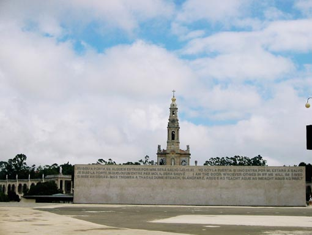
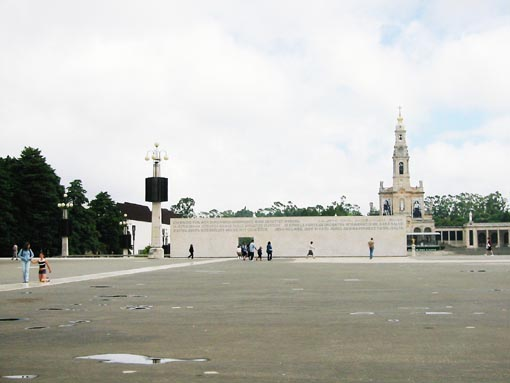

 
Romarsko mesto Fatima. Tu naj bi se trem pastirjem (10 letna Luzia Santos, njen 9 letni bratranec Francisco in 7 letna sestrična Jacinta Marta) 13 maja 1917 prikazala devica Marija v obliki svetle figure nad hrastovim drevesom. Ukazala jim je naj se vrnejo k drevesu vsakega 13. v mesecu naslednjih 5 mesecev. 13. oktobra se jim je pri njihovem srečanju pridružilo 70.000 romarjev, čeprav je samo Luzia slišala tri skrivnosti Fatime. V prvem sporočilu je Marija spregovorila o miru, v drugem o Sovjetski zvezi in nasvetu o njeni preureditvi za preprečitev svetovne vojne. Zadnjega sporočila Luzia ni izdala, predvidevajo pa, da je bila prerokba strašne nesreče.
Zdaj vsakega 13. v mesecu še posebej pa 13. maja in oktobra na tisoče ljudi roma v Fatimo v spomin srečanju Marije in treh mladih pastirjev.